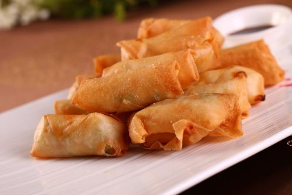

Vietnamese Food
Link
Link
Link
Spring roll

Ingredients
Rice paper wrappers
Vermicelli noodles
Shrimp
cabbage
Carrots
Fresh herb
Steps
Soak rice paper.
Layer noodles, veggies, and shrimp.
Roll tightly.
Serve with dipping sauce.
Spring Roll Tutorial